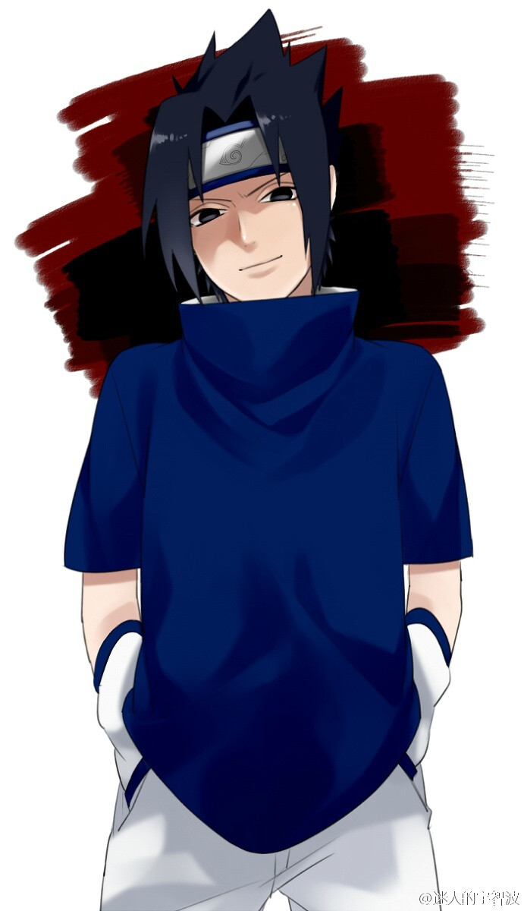

1. Project Introduction
This website is created for the COMM7960 course. It utilizes HTML5 and CSS3 to showcase the legendary world of Naruto while demonstrating core web design principles like the box model and responsive layout.
2. Featured Ninjas

Naruto Uzumaki
The protagonist who dreams of becoming the Hokage.

Sasuke Uchiha
The talented rival seeking to restore his clan's honor.
3. Official Trailer
4. Shinobi Villages
| Village | Leader | Element |
|---|---|---|
| Hidden Leaf | Hokage | Fire |
| Hidden Sand | Kazekage | Wind |